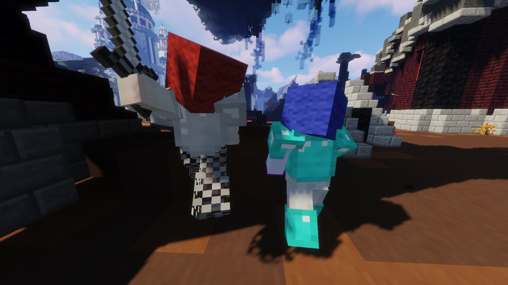

|  |
| Players from two different teams fighting each other. |
Team Deathmatch, often abbreviated to TDM, is a major event in the Hypixel Pit. Like all major events, when it occurs, 3 minutes advance warning is given. Team Deathmatch lasts for 4 minutes.
When Team Deathmatch starts, all players are assigned to either the red team or the blue team. Players cannot attack players on the same team as they are on. Placement in the event is determined by how many kills and assists a player obtains during the event. Players can view what team they are on by viewing their name color or the color of the wool on their head.
During Team Deathmatch, the following gameplay change takes effect:
The following rewards can be also obtained during Team Deathmatch:
Additional rewards that players can earn during Team Deathmatch: